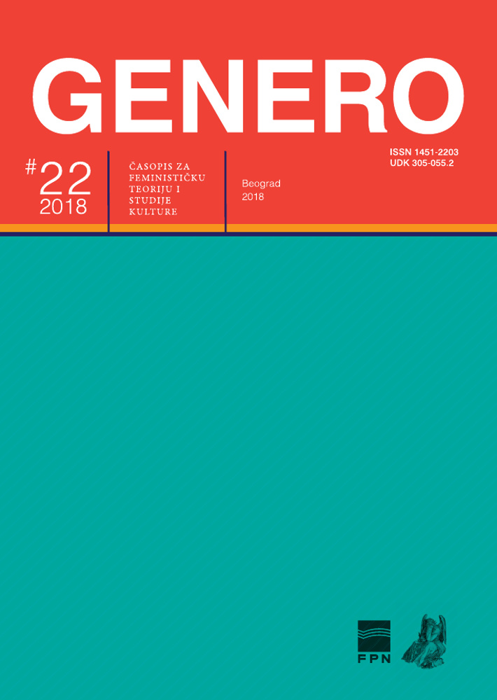

Novi broj
GENERO #22, 2018
Broj: 22
Godina: 2018
ISSN: 1451-2203
Izdavač: Centar za studije roda i politike, Fakultet političkih nauka, Univerzitet u Beogradu
Suizdavač: Centar za ženske studije, Beograd
Impresum: Preuzmite kao pdf
Table of Contents
TOPIC OF THE ISSUE: CONFERENCE PROCEEDINGS SOMEBODY SAID FEMINISM? FEMINIST THEORY IN SERBIA TODAY
Women’s Emancipation between Marxism-Leninism and the Practice of the Communist Party of Yugoslavia
Summary / Abstract: The question of the social and legal position of women in Yugoslavia was explicitly raised in 1945, after the establishment of a new, communist regime. The attitude towards the women’s issue in Yugoslavia was defined on the basis of Marxism and then socialism. The paper analyzes the relationship between Marxist theory and women’s issues, Lenin’s and Stalin’s views on the emancipation of women, although the results of the survey show that the women’s issue has not been solved separately: the emancipation of women should be included in the working class issues. The CPY largely copied the models of the Soviet leadership so that the issue of women’s emancipation could not be an exception. Although that approach in practice led to the loss of the particularity of the women’s issue, for a deeply patriarchal country like Yugoslavia, the attitude that the government, or the CPY, had towards the position of women was certainly a novelty that brought about significant changes. The subject of this work is the analysis of public (communist) discourses in the USSR and Yugoslavia in order to point out similarities and deviations between these countries.
Keywords: Marxism, women’s question, Communist Party of Yugoslavia, Women’s Antifascist Front, Zhenotdel
Page Range: 1-20
Language: Serbian
Women in the Headquarters: The Case of the Zitzer Spiritual Republic
Summary / Abstract: Based on the analysis of the case study of the Zitzer Spiritual Republic, an antiwar movement in the ethnically dominantly Hungarian village Trešnjevac/Oromhegyes that took place in 1992, the article aims at reflecting on theoretical and empirical questions related to the links between ethnic and gender identifications. Using intersectionality as a perspective and through the analysis of newspaper articles and other printed publications, video recordings from the time of the event and later, as well as oral and written recollections of the members of the peace movement, the text deals with issues such as the importance of gender roles and gender regimes in the everyday life of the community built in the Zitzer Spiritual Republic, the role of the women who initiated Zitzer and their perspectives on war, ethnicity, gender and community, the gendered division of agency in the "imagined community", antiwar activism in minority and/or rural settings and the dynamics of the private and public spheres.
Keywords: gender, ethnicity, Trešnjevac, club Zitzer, Zitzer Spiritual Republic, gender roles, antiwar activism
Page Range: 21-42
Language: Serbian
Feminist Reconceptualization of Personal Autonomy
Summary / Abstract: The problem of defining personal autonomy is at the core of numerous discussions of interest for feminists. Lack of respect for agent`s preference would be a violation of her autonomy. On the other hand, respect for her adaptive preferences would be capitulation in front of the institutional injustice which produced them in the first place. In the first part of the paper, the procedural theory of personal autonomy based on the independent agent`s authorization of desire will be discussed. According to the procedural or value-variable solution to this problem, the agent is autonomous in relation to her own desires, if she identifies with them, regardless of the content of her desires. The procedural analysis of personal autonomy has been originally developed through the theory of the free will of philosopher Harry Frankfurt and the theory of the personal autonomy of philosopher Gerald Dworkin. The conception of personal autonomy developed by Frankfurt and Dworkin is structural because according to it the agent is autonomous when the first-order desire (the desire for a certain state of affairs) is in line with the second-order desire (the desire to want a certain state of affairs). This conception is also hierarchical because it favours the second-order desires relative to the first-order desires. Identification could be achieved only through changing the first-order desire so that it is in line with the second-order desire, but not the other way around. The hierarchical conception of personal autonomy is the subject of numerous feminist critiques. The critique of the one-way identification process by philosophers Marilyn Friedman and Diana Tietjens Meyers will be discussed in the second part of the paper as a feminist alternative to the traditional, hierarchical conception of personal autonomy.
Keywords: personal autonomy, self, identification, adaptive preferences, the problem of manipulation, hierarchy problem, feminist philosophy
Page Range: 43-58
Language: Serbian
Agir-femme/parler-femme: About Language and by Language of Sexual Difference
Summary / Abstract: Relying on philosophical heritage left by Luce Irigaray in her book Ethics of sexual difference, and trying to connect her thought to the contemporary state of feminist theory and practice in our country, with an emphasis on problems that arise in dealing with totalizing thinking, in this paper I will try to explain what language of sexual difference means and why it is important to open, establish and maintain female identity in a language that is not neutral and which does not reduce. By representing the thesis about the possibility, that is, of the necessity of creation and use of language that would ultimately respond to the supremacy of philosophical logos and its universalization, which, by its implicit axiomatic mechanisms, tries to reduce all otherness and all others to itself (or to "the economy of the same"), I will try to consider the way by which it can/must be invited a different text, a new addressing that would indicate the neutralization of sexual difference in history, transformed the question of the other into question of sexed other, and through that gest erased philosophical-ethical injustice, breaking with tradition and traded logocentric language and thinking. Finally, in this paper I am considering the necessity of identifying female acting and female speech, i.e. their inextricability, especially in the context of the problems that feminist theory and practice encounter every day in our society/societies, and I am pointing to the traps that patriarchy sets to woman by its assimilating addressing and treatment.
Keywords: language, sexual difference, female, parler-femme, ethics, other(ness)
Page Range: 59-70
Language: Serbian
Thinking the Change Spatially – Queer (and) Feminist Readings of Plato’s Chora
Summary / Abstract: Following the basic assumption of the spatial turn in social sciences and humanities that positions space and social (re)production in a dialectical relation – social relations produce space, just as the space itself influences the reproduction, as well the potential transformation of social relations – feminist and queer theory have also integrated category of space in their research framework, whether referring to the material space, representations of space or spatial metaphors (and figures). Aside from spatial/geographical aspect being relevant in broad analysis of gendered power relations within existing historical and contemporary contexts, it seems just as important and potent, and this text stands on such position, to include thinking of the spatial component of the feminist and queer projects of changing dominant order – thinking about spatial configurations that support envisioned political and social changes.
One of the spatial figures which continue to offer fruitful and contested interpretations of its political potential represents Plato’s concept of chora (χώρα). Description of this concept in Plato’s dialogue Timaeus seems to escape unambiguous, coherent image, therefore, unsurprisingly, producing the multiplicity of readings. This text will provide an overview of some of the (different) interpretations of this concept – queer (one that Jacques Derrida provides), feminist (Elisabeth Gross) and the one that could be characterized as queer feminist interpretation (En Bergren). Although they are not necessarily mutually contrasted, but rather point towards different aspects of chora, this text will argue that the interpretations offered by Derrida and Bergren represent more productive stands for thinking about radically different space.
Keywords: Plato, chora, space, politics, change, feminism, queer
Page Range: 71-85
Language: Serbian
STUDIES AND ARTICLES
Female Antiwar Essays: Outsider and Witch as Feminist Dissidents in Three Guineas and The Culture of Lies
Summary / Abstract: Nationality is a gendered concept, and only some can embody national subjects, become full citizens. Nationality is, just like the last name (its telltale sign), traditionally inherited by paternal lineage. I am interested in the history of otherness in anti-war essays by Virginia Woolf and Dubravka Ugresic whereby I analyze the outsider and the witch as paradigmatic figures of dissidents. Virginia Woolf writes of femininity as of planetary exile. In Three Guineas fascism is not treated as an extreme aberration but a consequence of the patriarchal sex-gender system. Woolf recognized totalitarian patterns among domestic, British tyrants. She invites women to refuse participation, to metaphorically step out of the procession of sons of educated men and stop supporting war efforts. Antiwar societies, personal donations and feminism are just not enough - women need to become pacifist outsiders. Published in prewar 1938, the essay was widely criticized. The most controversial was the definition of the war as "man’s game". Dubravka Ugresic in The Culture of Lies: Antipolitical Essays writes about the regional context. Her essays were written between 1988 and 1995, and most of them were published in international magazines. Untranslated essays were read by few. Nevertheless, the author faced great persecutions. The attack on five Croatian intellectuals who have publicly criticized war-related sexual violence is known as the "Witches of Rio" case. Dubravka Ugresic accepts the label of a witch describing her as a stereotype destroyer and a dangerous woman. I tried to show that essays by these two authors share more than thematic similarity. They can be observed within the same theoretical paradigm in which feminine is existential outsiderness (Mayer) or innate nomadism (Braidotti).
Keywords: antiwar essays, outsider, pacifism, witch, feminism
Page Range: 89-112
Language: Serbian
Analysis and Interpretation of Katalin Ladik’s Performance Art, Happenings and Body Art: A Feminist Study
Summary / Abstract: The paper inquires feminist aspects and implications of performance, happening and body art of the neo-avant-garde Yugoslav artist Katalin Ladik. Being created in specific social conditions of Yugoslav society in the late 60s, artworks of Ladik have their subversive feminist potential in the patriarchal society, and on the other side they might as well be the product of this specific social conditions in a sense that they show contradictions, inconsistency and diversity in their conceptualization of gender, gender roles, Woman, femininity and emancipation. Based on her art that was being made from 1968-1983, I am trying to offer the analysis of Ladik’s approach to sex, gender, sexuality, sexual difference, and gender roles, but in the same time trying to point out the social impact and emancipatory potential of feminist aspects of her art. Also, I will try to interpret meanings of her eclectic and hybrid understanding of these concepts, and their integration in the personal theory of the artist, or better say personal mythology.
Keywords: feminism, feminist art history, feminist art, feminist performance, body art, happening, Yugoslav neo-avant-garde art
Page Range: 113-141
Language: Serbian
Teaching Postsocialism in a Postsocialist Country: Everyday as a Source of the Political
Summary / Abstract: In this paper, I would like to draw attention to the challenges of theorizing and teaching about everyday practices of postsocialist transformation in the former Yugoslavia. I focus on the master course entitled "Cultural and Social Practices of Postsocialism: A Case Study of the Former Yugoslavia" (later renamed "Culture of Socialism and Postsocialism") taught as an elective course at the Faculty of Political Sciences at the University of Belgrade. It is designed to offer understanding of different and often contradictory ways in which dramatic changes in Eastern Europe from 1989 onwards have been played out in everyday life of people who live in these regions. The main challenge of teaching this course was to encourage students to critically think about politics in its various guises and connect their everyday experiences with political and cultural theory. Not only does it show that teaching is always political, but that the actual challenge lies in teaching (and learning) the political from the sources and practices of everyday life.
Keywords: postsocialism, teaching, everyday life, politics
Page Range: 143-161
Language: English
The Triumph of Discovery II: Intellectual Biographies of Dorothy Hodgkin and Rosalind Franklin
Summary / Abstract: This essay analyzes the lives and works of two distinguished women scientists in the 20th century, Dorothy Hodgkin and Rosalind Franklin. Their work and the work of their other female colleagues show that female scientists are present in large numbers in sciences that deal with living beings. The evidence for that is the number of the most important prizes and awards that female scientists received for their work in the fields of molecular biology, physiology, and medicine in general. This essay, therefore, analyzes scientific discoveries made by Dorothy Hodgkin, who was awarded the Nobel Prize for her determinations of the structures of important biochemical substances by X-ray techniques, and Rosalind Franklin, whose participation in and contribution to the discovery of the so-called secret of life, the DNA structure, was not officially and adequately recognized.
Keywords: intellectual biography, women, history of science, discrimination, scientific discovery, chemistry, crystallography, the Nobel Prize, Dorothy Hodgkin, Rosalind Franklin
Page Range: 163-177
Language: Serbian
BOOK REVIEWS
From Belonging to the Politics of Belonging: The Intersectional Approach of Nira Yuval-Davis
Teaching Critical Reading
Notes on Feminist Balkanology
IN MEMORIAM